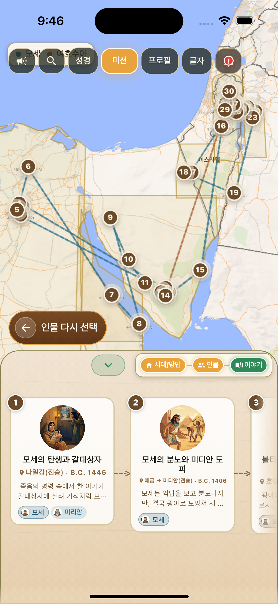
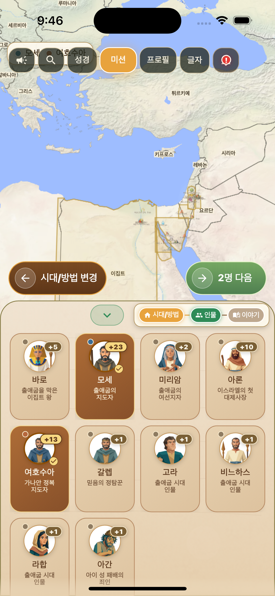
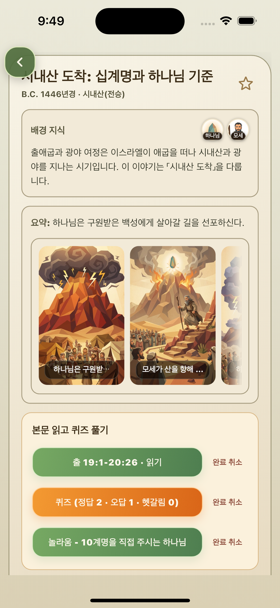
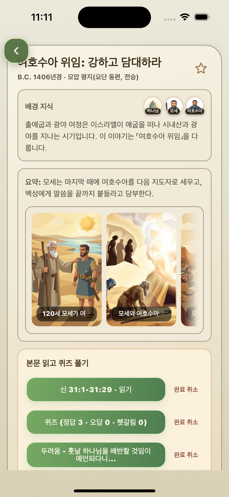
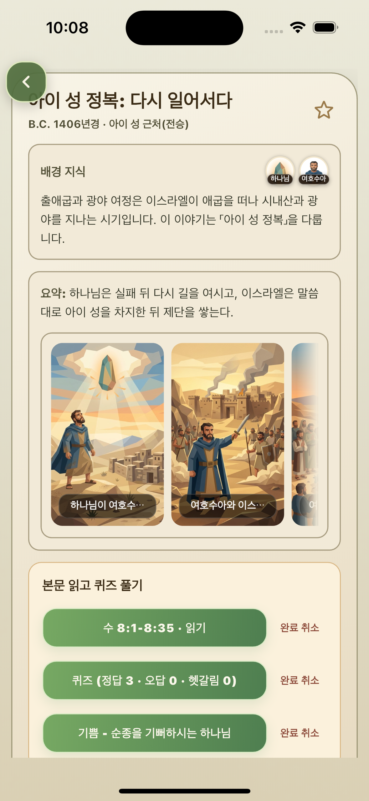

인물 선택
모세와 여호수아를 함께 선택해 출애굽의 시작과 가나안 입성의 다음 세대를 한 흐름으로 연결합니다.
Exodus Route Map
애굽을 떠나 홍해와 시내산, 광야와 요단강을 지나 가나안으로 이어지는 여정을 지도 위에서 하나의 흐름으로 따라갑니다.

Route Flow
출애굽기는 한 장면으로 끝나는 이야기가 아니라, 하나님이 백성을 구원하시고 광야에서 빚으시며 약속의 땅으로 이끄시는 긴 여정입니다.
모세와 여호수아를 함께 선택해 출애굽의 시작과 가나안 입성의 다음 세대를 한 흐름으로 연결합니다.
애굽, 홍해, 시내산, 광야, 요단 동편과 가나안 입성 지점을 지도 위에서 따라가며 큰 방향을 먼저 잡습니다.
10계명, 여호수아 위임, 아이성 정복처럼 중요한 사건을 열어 배경과 의미를 더 깊게 살펴봅니다.
사건과 연결된 성경 본문을 읽고, 퀴즈로 이해를 확인한 뒤 느낀 감정을 기록합니다.
Route Screens
인물 선택 화면에서 모세와 여호수아를 함께 고르고, 이어지는 지도 화면에서 출애굽부터 가나안 입성까지의 사건 흐름을 한눈에 확인합니다.

Event Details
상세 페이지 스크린샷은 본문, 배경 설명, 퀴즈 또는 4컷 이미지가 함께 보이는 화면이면 이 페이지의 설득력이 좋아집니다.

출애굽 후 하나님이 백성을 광야로 이끄시고, 하나님의 백성답게 살아갈 길을 가르치시는 장면입니다.

약속의 땅을 향한 여정이 한 세대에서 다음 세대로 이어지는 중요한 전환점입니다.

가나안 입성 이후에도 하나님 앞에서 순종해야 한다는 사실을 보여주는 사건입니다.
Study Flow
지도에서 사건의 위치와 배경을 확인한 뒤, 성경 본문을 읽고 퀴즈로 이해를 점검하며 마지막에는 그 사건 앞에서 느낀 감정을 남깁니다.

사건과 연결된 말씀을 읽으며 지도에서 본 장면을 본문으로 다시 확인합니다.

읽은 내용을 간단한 질문으로 확인하며 사건의 핵심을 자연스럽게 정리합니다.

말씀을 읽고 남은 마음을 선택해 지도와 나의 묵상 흐름 안에 기록합니다.